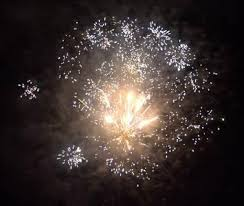

<!doctype html>
<html>
<head>
<meta charset="utf-8">
<title>Spletna stran 4</title>
</head>

<head>
<link rel="preconnect" href="https://fonts.gstatic.com">
<link href="https://fonts.googleapis.com/css2?family=Chango&display=swap" rel="stylesheet">
<style>


<link rel="preconnect" href="https://fonts.gstatic.com">
<link href="https://fonts.googleapis.com/css2?family=Chango&family=Ranchers&display=swap" rel="stylesheet">
<style>


header {
text-align: center;
}
div {position:static;

text-align: center;
display: block;
}
html {
background-image: url("../slike/intimni odnos.jpg");
background-repeat:repeat-y;
background-size: cover;
}

#penis {
font-style: italic;

}
#quote {
position:static;
bottom: 20%;
}
#slika {
margin-left: 30%;
width: 40%;
}
.kurac {

margin-top: 10%;
text-align: center;

}

#naslov {
color: #2C344E;
font-family: 'Ranchers', cursive;
}

</style>
<meta charset="utf-8">
<title></title>
</head>
</html>
<header>
 </p> <h1 id="naslov"><strong>Nanotehnologija v pirotehniki </strong></h1></p>
</header>
<p><h3><strong>Veliko je bilo že opravljenih raziskav o prisotnostih delcev pri pirotehniki, predvsem pa pri ognjemetu. Ena izmed raziskav je potekala tudi v Sloveniji in je pokazala, da se je pri 5 minutnem ognjemetu sprostilo kar 1 triljon nanodelcev. Kemijska analiza teh nanodelcev je kasneje prikazala prisotnost fosforja, kalija, aluminija, magnezija, silicija, bakra in še bi lahko naštevali. Ti elementi so običajni gradniki ognjemeta. Sicer so detektorji prej zaznali večje nanodelce nato so jim sledili še manjši.</strong></h3></p>


<p><h3><strong>Tudi pri kresničkah in prskalicah se sproščajo nanodelci, vendar v bistveno manjšem številu kot pri ognjemetu. V nanodelcih iskric pa je bila največja zaznana prisotnost barija-37 odstotna. Barij je zelo strupen element, vendar se ga uporablja zaradi barvnih in svetlobnih efektov- tudi v ognjemetih. </strong></h3></p>



<div class="kurac">
<p><h3><a href="https://inter4life.github.io/Nanotehnologija/nanosenzorji/">Nazaj</a> <a href="https://inter4life.github.io/bine_animacija/2.html">Domov</a> <a href="https://inter4life.github.io/Nanotehnologija/Nanotehnologija_lahko_pospe%C5%A1i_testiranje_zdravil/">Naprej</a></h3></p>
</div>